Break
A feature designed to support students' mental well-being during an intense preparation phase.
Everyone was designing for more study time. I proposed a pause. It became an instant hit.
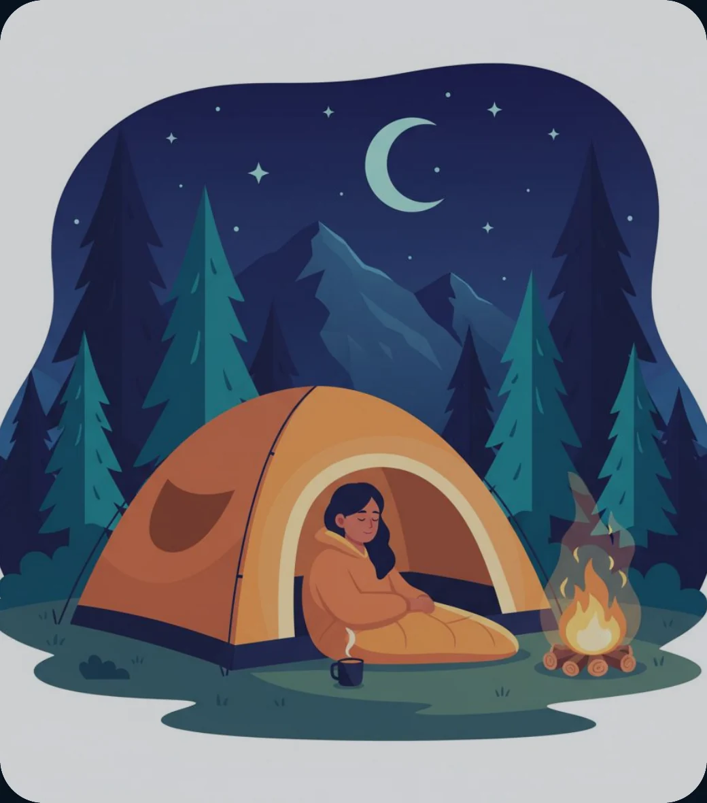
Behind JEE and NEET
JEE is an engineering entrance examination for admission to colleges including the IITs. NEET is a medical entrance examination for medical and dental colleges across India. Students are typically 16–19 years old and prepare during grades 11 and 12, often after a foundation phase in grades 9 and 10.
The journey is long, intense, and highly competitive. We needed a feature that could support students without feeling like another obligation.
The experience had to be approachable, light, and easy to return to, even when schedules were packed and motivation was low.
-
01
Foundation
Build basic science and mathematics concepts in grades 9 and 10.
-
02
Preparation
Balance intense coaching, school, revision, mock tests, and regular assessments.
-
03
Exam
Sit JEE Main, JEE Advanced, or NEET.
-
04
Results & counselling
Wait for rankings and participate in college-admission counselling.
Understanding Vision – Brainstorming
When we met the leadership, the vision was shared and it was somewhat like this. This is just an idea we designed within 30 minutes and decided to test with a few students offline.
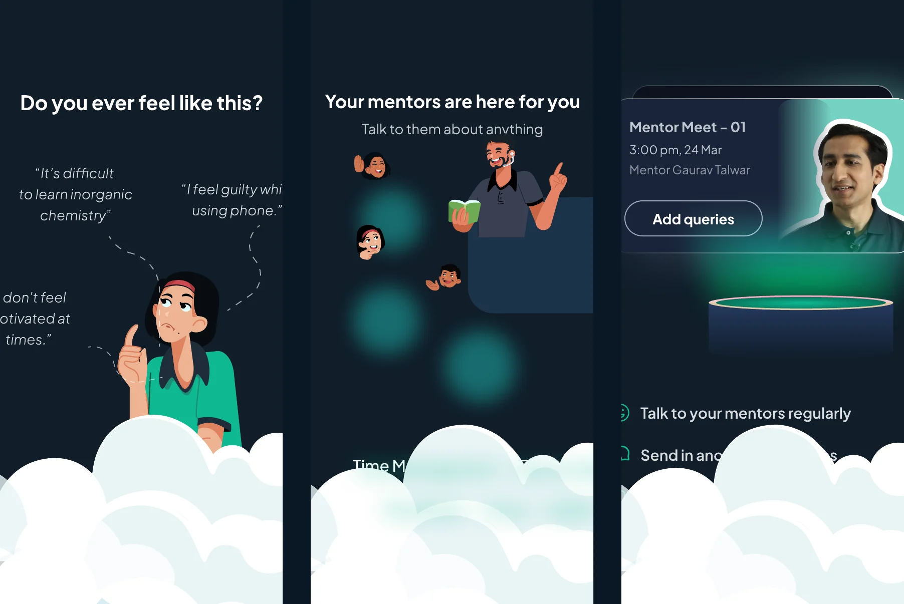
This was a wake-up call for everyone. For the first time in ALLEN's history, we were going to promote taking a pause from studying.
Before we started designing, we defined the theme, knowing this feature needed to feel distinct from the rest of the experience.
Students didn't want another guidance session or lecture.
This is what we found: they wanted support, to be heard, and didn't constantly want motivational talks about how to succeed.
Design support without making students feel judged.
The preparation journey brings high stress and anxiety, intense competition, and a strong need for encouragement. The feature had to feel approachable, light, and easy to return to.
- Connect students with a mental-health counsellor.
- Connect them with life coaches who can reinforce that there is life beyond JEE and NEET.
- Regularly reassure students that they are special.
- Share stories of well-known people to show what is possible.
- Connect students with teachers for time management and revision strategies.
- Create a place where students can express themselves, rant, and let their hearts out.
- Find a name students would relate to and willingly return to.
Understand what students carry with them.
-
Fear of failure
50%
among cited suicide reasons
-
Relationship issues
25%
cited reason
-
Family problems
25%
cited reason
-
Severe stress
~7%
Indian adolescents
Social issues, lifestyle changes, performance anxiety, physical health, family problems, or other external events.
Name the space before designing its voice.
Because this was a new feature, the name needed to feel intuitive, relaxing, light, and distinctive. Naming would set the tone for the entire content design.
Students might not feel comfortable with the term "mental health". They might already dislike the preparation phase, so conflicting language could create resistance. Pressure to perform can make admitting a challenge feel like weakness. The experience had to communicate support without overwhelming or judging students.
Care, Calm, FIT, Peace, Zen, Quiet, My Zone, Cool, Unwind
Break
A simple word with broad branding potential that creates an instantly positive feeling and is relatable across age groups.
Why "Care" did not work, and "Break" did.
"Care" initially came up, but it sounded like customer support, felt too personal and serious, and limited the ability to use a light tone. We explored Break, Calm, FIT, Peace, Zen, Quiet, My Zone, Cool, and Unwind.
Break is a simple word with broad branding potential. It creates an instantly positive feeling and is relatable across age groups. It sounds relaxing while clearly suggesting a pause from studying. The feature was broader than mental health: it could motivate, listen, entertain, and support. Unlike Calm, Care, or Peace, Break could also make students smile, laugh, and chat. The theme left room for future features and playful communication.
- Home
- Library
- Doubts
- Profile
- Home
- Library
- Doubts
- Break
- Profile
Once it had a name, it found a world. Then, we worked on an iteration.
Finding a story that felt motivating, fun, and light.
-
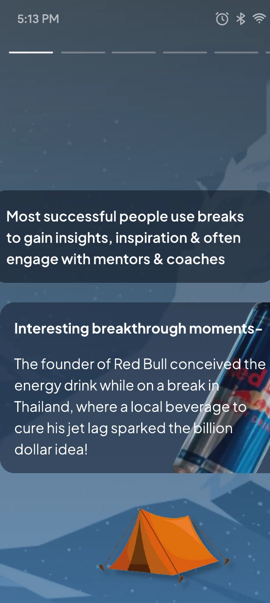
-
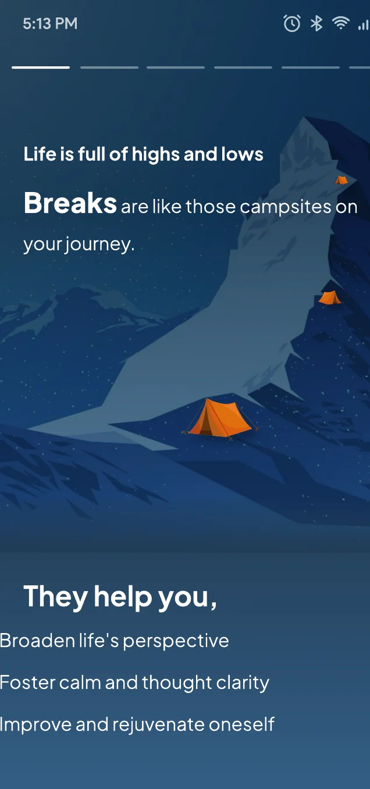
-
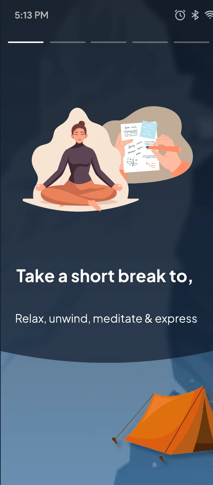
-
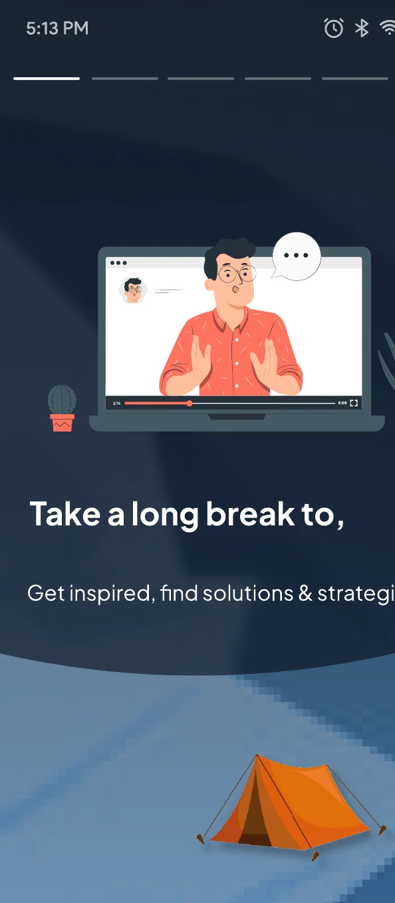
Two things needed attention: the color system and the content.
As a content designer also, I focused on making the story clearer and the language more scannable.
A quiet invitation to pause.
-
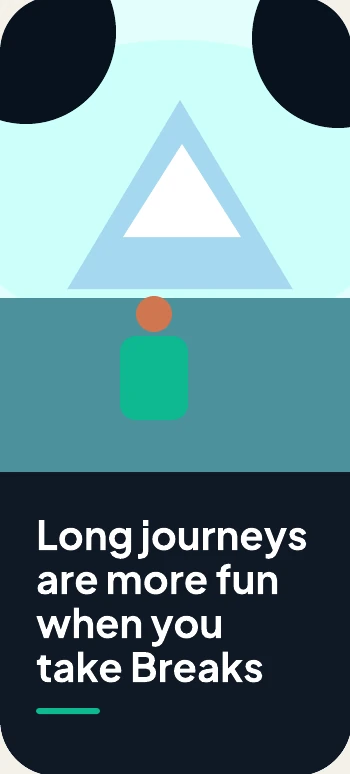
-
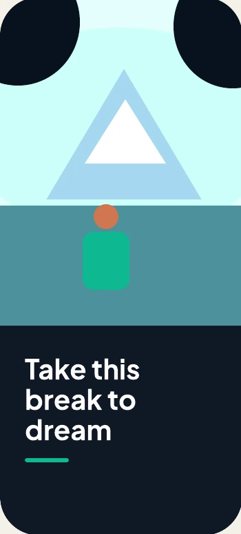
-
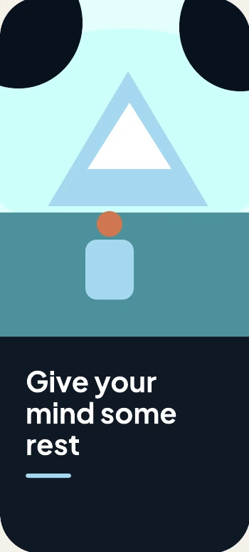
-
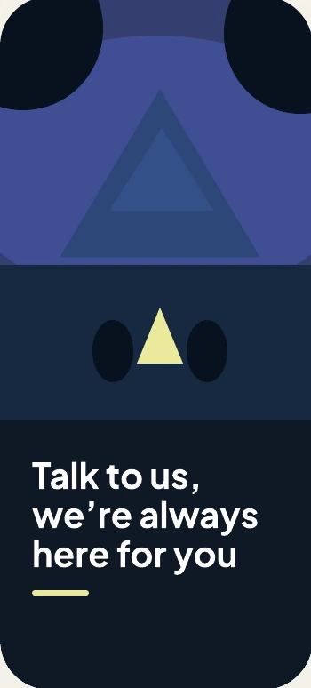
Deep blue grounds the experience; cool landscape tones create calm, while small warm accents keep it human.
- Night #0F1825
- Forest #162941
- Teal #4C929C
- Sky #A5D9F0
- Mint #0EB891
- Warmth #CF7650
Support that feels close, not clinical
The final direction layers reflective prompts, approachable mentor imagery and explicit next steps into one cohesive dark-mode experience.
-
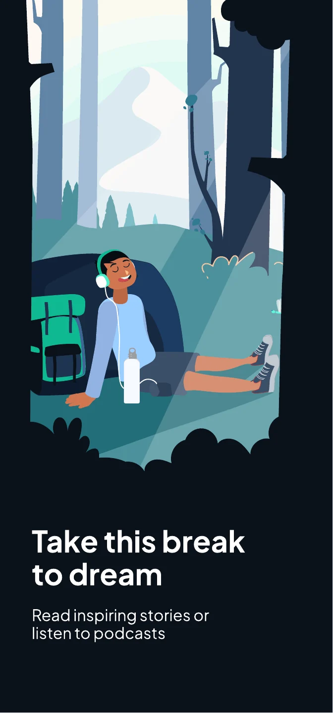
-
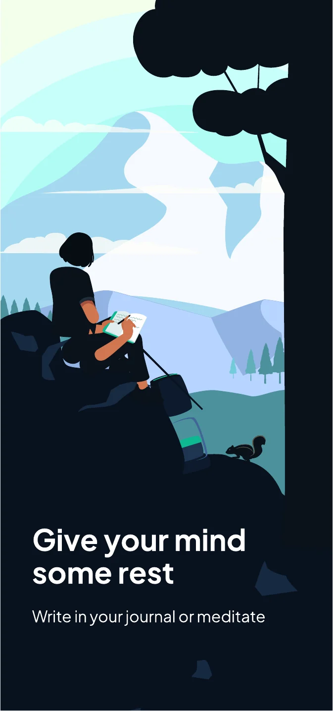
-
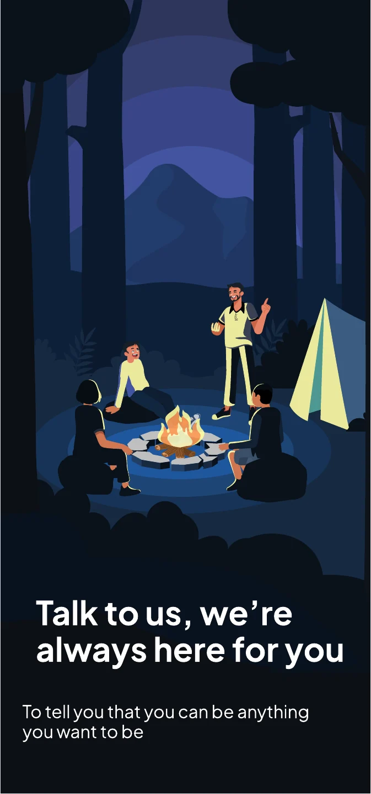
-
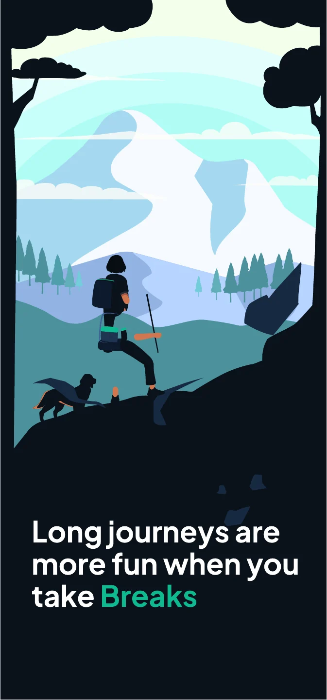
The feature included podcasts, counselling, stories of people who achieved great things, and a connection to daily meditation. It needed an introduction that would inspire younger students.
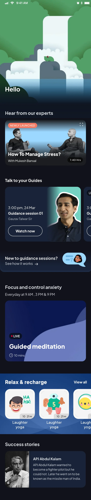
It became the most used feature. Something we never anticipated
- 50%+ of students who tapped Break read every story
- 10–15 min average daily use despite packed schedules
- +34 points Engagement score
- +2.2 points Student CSAT
Students felt more positive about reaching out for help and knowing they were not alone.